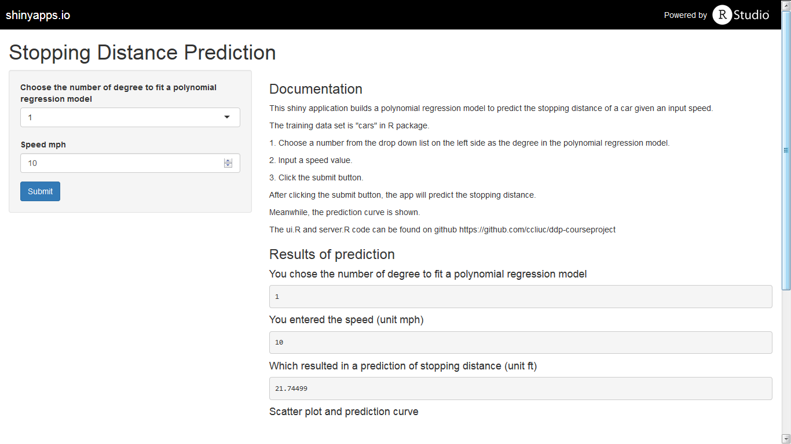

The training data set used in this course project is "cars" in R package.
data(cars)
par(mar=c(15,4,0,2))
plot(cars, xlab = "Speed (mph)", ylab = "Stopping distance (ft)",las = 1, xlim = c(0, 25))
ccliuc
The training data set used in this course project is "cars" in R package.
data(cars)
par(mar=c(15,4,0,2))
plot(cars, xlab = "Speed (mph)", ylab = "Stopping distance (ft)",las = 1, xlim = c(0, 25))
This shiny application builds a polynomial regression model to predict the stopping distance of a car given an input speed.To use the shiny app (https://ccliuc.shinyapps.io/CourseProject/), please follow the steps below.
Choose a number from the drop down list on the left side as the degree in the polynominal regression model.
Input a speed value.
Click the submit button.
After clicking the submit button, the app will predict the stopping distance.
Meanwhile, the prediction curve is shown.
